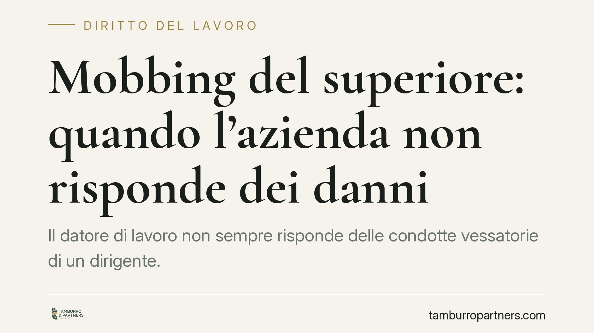

Mobbing del superiore: quando l'azienda non risponde dei danni
Il datore di lavoro non sempre risponde delle condotte vessatorie di un dirigente. La giurisprudenza esclude la responsabilità contrattuale dell'azienda quando il mobbing persegue finalità egoistiche e private del superiore e il datore ha vigilato, adottando misure a tutela della vittima. In quei casi risponde, in via extracontrattuale, il solo autore delle condotte.

Il fatto e la questione
Un lavoratore subisce comportamenti persecutori da parte di un superiore gerarchico e agisce per il risarcimento. La domanda ricorrente è: paga l'azienda o l'autore materiale delle vessazioni?
La risposta non è automatica. La giurisprudenza distingue in base alla natura delle condotte e al comportamento tenuto dal datore di lavoro. Quando le vessazioni rispondono a un interesse personale del superiore, e non a una logica organizzativa dell'impresa, la responsabilità del datore può venire meno.
Inquadramento normativo
Il perno della materia è l'art. 2087 del codice civile, che impone all'imprenditore di adottare le misure necessarie a tutelare l'integrità fisica e la personalità morale dei lavoratori. Da questa norma discende la responsabilità contrattuale del datore per il mancato rispetto dell'obbligo di protezione: chi non vigila e non interviene risponde dei danni subiti dal dipendente.
Accanto a questa, opera l'art. 2043 del codice civile, che fonda la responsabilità extracontrattuale (o aquiliana) di chi cagiona ad altri un danno ingiusto. È la norma che colpisce direttamente l'autore materiale delle condotte illecite, a prescindere dal rapporto di lavoro.
La differenza è sostanziale. Nella responsabilità contrattuale il datore risponde per aver violato un obbligo di sicurezza; in quella extracontrattuale il dirigente risponde in proprio, come qualunque soggetto che commette un fatto illecito.
Quando l'azienda non risponde
La giurisprudenza esclude la responsabilità contrattuale del datore quando ricorrono due condizioni combinate.
La prima riguarda la finalità delle condotte. Se il mobbing persegue scopi egoistici e privati del superiore - antipatie personali, rivalse, interessi estranei all'organizzazione - le vessazioni escono dal perimetro dei rischi tipici dell'attività d'impresa. Non sono, cioè, riconducibili a una scelta o a un'omissione organizzativa dell'azienda.
La seconda riguarda la condotta del datore. Se l'impresa ha vigilato, ha reagito alle segnalazioni e ha adottato misure concrete a tutela della vittima, non può dirsi inadempiente rispetto all'obbligo dell'art. 2087. Aver attivato gli strumenti di protezione dimostra il rispetto del dovere di sicurezza.
Quando entrambi gli elementi sussistono, il danneggiato può agire solo contro il dirigente, in via extracontrattuale ex art. 2043.
Implicazioni pratiche
Per il lavoratore vittima, la distinzione ha conseguenze rilevanti. L'azione contro il datore è spesso più agevole: nella responsabilità contrattuale l'onere probatorio è meno gravoso e i termini di prescrizione sono più lunghi (dieci anni contro cinque). Se la responsabilità aziendale viene esclusa, resta la sola via contro il dirigente, con oneri e tempi diversi.
Per il datore di lavoro, la pronuncia conferma che la vigilanza attiva paga. Documentare le misure adottate a fronte delle segnalazioni non è solo un obbligo deontologico: è la prova che tiene indenne l'azienda quando il conflitto ha origine nei rapporti personali tra dipendenti.
Per il dirigente, la conclusione è chiara: la copertura del rapporto di lavoro non lo protegge. Delle condotte private risponde con il proprio patrimonio.
Cosa fare in concreto
- Se sei un lavoratore: raccogli e conserva ogni elemento (email, messaggi, testimonianze, certificazioni mediche) e formalizza le segnalazioni per iscritto, così da poter dimostrare sia le condotte sia la conoscenza da parte dell'azienda.
- Se subisci vessazioni: valuta con attenzione contro chi agire, distinguendo tra responsabilità del datore e responsabilità personale del superiore, perché cambiano prova e prescrizione.
- Se sei un datore di lavoro: predisponi procedure interne di segnalazione e intervieni per iscritto e in tempi rapidi su ogni denuncia, documentando le misure adottate.
- Se ricopri un ruolo dirigenziale: tieni presente che gli abusi mossi da interessi personali espongono a responsabilità diretta, non assorbita da quella aziendale.
- In ogni caso: verifica con un legale i termini di prescrizione applicabili prima di agire, perché la scelta della via processuale è spesso irreversibile.
Disclaimer
Contributo informativo a cura di Tamburro & Partners - Avv. Giuseppe Tamburro. Non costituisce parere legale.
Ogni storia di lavoro ha i suoi tempi.
Se gestisci HR e vuoi un confronto su contenzioso, ispezioni o licenziamenti, scrivi allo studio. Ti rispondiamo entro un giorno lavorativo.